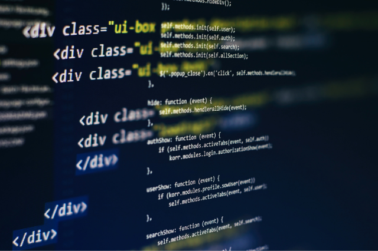
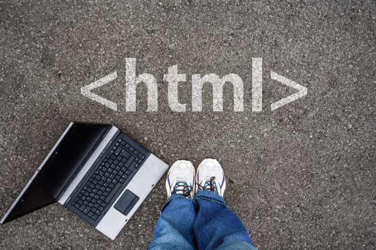
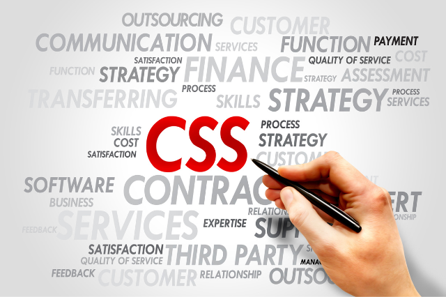

Destaque
PROGRAMAÇÃO
É uma linguagem formal que, através de uma série de instruções, permite que um programador escreva um conjunto de ordens, ações consecutivas, dados e algoritmos para criar programas que controlam o comportamento físico e lógico de uma máquina. Programador e máquina se comunicam por meio dessa linguagem, permitindo especificar, com precisão, aspectos como:
quais dados um software deve operar, como esses dados devem ser armazenados ou transmitidos, quais ações o software deve executar, de acordo com cada circunstância variável.
Para explicar melhor (e com menos palavras), a linguagem de programação é um sistema de comunicação estruturado, composto por conjuntos de símbolos, palavras-chave, regras semânticas e sintáticas que permitem o entendimento entre um programador e uma máquina. É importante enfatizar que é um erro comum usar a linguagem de programação e a linguagem de computação como sinônimos. Mas por que não devemos confundi-las?
Leia maisLinguagem
-

HTML
(Linguagem de Marcação de HiperTexto) é o bloco de construção mais básico da web.
-

CSS
(Cascading Style Sheets ou Folhas de Estilo em Cascata) é uma linguagem de estilo (en-US) usada para descrever a apresentação de um documento escrito em HTML ou em XML
-
BOOTSTRAP
é um framework front-end que fornece estruturas de CSS para a criação de sites e aplicações responsivas de forma rápida e simples.
-
JAVASCRIPT
JavaScript (às vezes abreviado para JS) é uma linguagem leve, interpretada e baseada em objetos com funções de primeira classe, mais conhecida como a linguagem de script para páginas Web